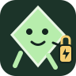

A small, original offline puzzle
Mosslight Courier
One glow cell. Three quiet greenhouses. Find your route.
Board
Focus board
Loading local game…
↑
←
↓
→
Wait
Undo
Restart
Optional locally generated sound